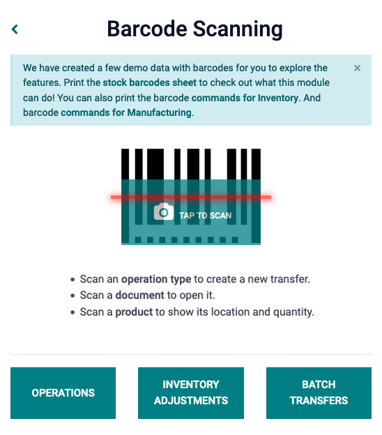

Procesar recepciones y entregas con códigos de barras¶
La aplicación Código de barras le permite procesar recepciones, entregas y otros tipos de operaciones en tiempo real con un lector de código de barras o con la aplicación para celulares de Odoo.
Así podrá procesar operaciones en el piso de un almacén cuando sucedan, en lugar de tener que esperar para validar transferencias desde una computadora. Procesar operaciones de esta manera puede ayudarle a asignar los códigos de barra adecuados a los productos, preparación de pedidos, ubicaciones, etc. correctos.
Activar la aplicación Código de barras¶
Para utilizar la aplicación Código de barras para procesar transferencias, debe instalarla. Para esto tiene que habilitar la función desde la configuración de la aplicación Inventario.
Para hacerlo, vaya a la . Desplácese hacia abajo hasta la sección de Código de barras, y marque la casilla junto a la función Lector de código de barras.
Una vez que la casilla esté marcada, haga clic en Guardar en la parte superior de la página para guardar los cambios.
Una vez que vuelva a cargar la página, aparecerán nuevas opciones en la función Lector de código de barras: nomenclatura de código de barras (con el menú desplegable correspondiente), puede seleccionar ya sea la nomenclatura predeterminada o la la nomenclatura predeterminada GS1
También hay una flecha de enlace interno Configurar códigos de barras de productos, junto con un conjunto de botones de Imprimir para imprimir comandos de códigos de barras y una hoja de demostración de códigos de barras.

Para obtener más información sobre la instalación y configuración de la aplicación Código de barras, consulte las páginas de documentación Configurar su escáner de código de barras y Active los códigos de barras en Odoo.
Escanear códigos de barras para recepciones¶
Para procesar las recepciones de almacén para productos entrantes, primero debe crearse una orden de compra y un proceso de operación de recepción.
Para crear una Orden de compra vaya a . Esto lo llevará a una nueva solicitud de cotización en blanco.
Desde el formulario en blanco de Solicitud de cotización, haga clic en el menú desplegable ubicado junto al campo Proveedor para agregar uno. Después, en la línea Producto de la pestaña Productos, haga clic en Agregar un producto y seleccione los productos que desea agregar a la cotización.
Una vez que haya terminado, haga clic en Guardar en la parte superior del formulario y después haga clic en Confirmar orden para confirmar la Solicitud de cotización a Orden de compra.
Para procesar y escanear códigos de barras para recepciones de almacén vaya a la .
Una vez en la aplicación Código de barras, verá una pantalla de Escaneo de código de barras donde podrá ver diferentes opciones. Para procesar recepciones, haga clic en el botón Operaciones en la parte inferior de la pantalla, el cual lo llevará a una página donde podrá ver un resumen de Operaciones.
En esta página ubique el recuedro Recepciones y haga clic en el botón # por procesar para ver todas las recepciones pendiendes, después, seleccione la que quiere procesar. Esto lo llevará a la pantalla de transferencia de código de barras.
Nota
Si solo está usando la aplicación móvil de Código de barras de Odoo, el código de barras para cada transferencia de un tipo de operación correspondiente se puede escanear para procesarse sin problemas. Una vez que lo escanee, los productos que sean parte de una transferencia existente pueden escanearse y los productos nuevos se pueden agregar a la transferencia también. Cuando haya escaneado todos los productos, valide la transferencia para seguir con los movimientos de existencias.
Desde esta pantalla aparecerá una vista general de todas las recepciones por procesar dentro de esa transferencia (WH/IN/000XX). En la parte inferior de la pantalla hay opciones para Agregar un producto o validarlo, dependiendo si los productos necesitan agregarse a la operación, o si se debe validar toda la operación al mismo tiempo.
Para procesar y escanear cada producto de forma individual, seleccione una línea de producto específica. Puede hacer clic en el botón +# (en este caso, +10) del producto, o en el icono de lápiz para abrir una nueva pantalla y editar esa línea de producto.
En esta pantalla aparece el producto que se está recibiendo. Bajo el nombre del producto, se puede editar la línea Cantidad. Cambie el 0 de la línea por la cantidad deseada o haga clic en el botón /# Unidades (en este caso, /10 Unidades) para llenar automáticamente la cantidad pedida desde la orden de compra.
Example
En la operación de recepción WH/IN/00019, se espera recibir 10 unidades del producto código de barras. [BARCODE_PROD] es la referencia interna configurada en el formulario del producto. Escanee el código de barras del producto de código de barras para recibir una unidad. Después, haga clic en el icono de lápiz para ingresar las cantidades recibidas de forma manual.
Además, puede hacer clic en los botones +1 y -1 para agregar o quitar cantidades de un producto, además de que también puede usar el teclado de números para agregar cantidades.
Debajo del teclado numérico se encuentra la línea Ubicación que usa WH/Stock de forma predeterminada, a menos que indique otra ubicación en el producto. Haga clic en esta línea para que aparezca un menú desplegable con otras ubicaciones para elegir.
Una vez que esté listo, haga clic en Confirmar para confirmar los cambios realizados en la línea de producto.
Después, desde la página de resumen con todas las recepciones para procesar dentro de esa transferencia (WH/IN/000XX), haga clic en el botón +# en la línea de producto para los productos que se están recibiendo, y haga clic en Validar. Ya procesó la recepción y puede cerrar la aplicación Código de barras.
Escanear códigos de barra para órdenes de entrega¶
Para procesar los envíos de almacén para productos salientes, primero debe crearse una orden de venta y un proceso de operación de envío.
Para crear una orden de venta, vaya a la para crear una cotización nueva.
Desde el formulario en blanco, haga clic en el menú desplegable situado junto al campo Cliente para añadir un cliente. Después, en la línea Producto de la pestaña Líneas de la orden, haga clic en Añadir un producto y seleccione los productos que desee añadir a la cotización.
Una vez que haya terminado, haga clic en Guardar en la parte superior del formulario y después haga clic en Confirmar orden para confirmar la Orden de venta.

Para procesar y escanear códigos de barras para envíos de almacén vaya a la .
Una vez en la aplicación Código de barras, verá una pantalla de Escaneo de código de barras donde podrá ver diferentes opciones. Para procesar enviós, haga clic en el botón Operaciones en la parte inferior de la pantalla, el cual lo llevará a una página donde podrá ver un resumen de Operaciones.
En esta página ubique el recuedro Órdenes de envío y haga clic en el botón # por procesar para ver todas las órdenes de envío pendientes, después, seleccione la que quiere procesar. Esto lo llevará a la pantalla de transferencia de código de barras.
Desde esta pantalla aparecerá una vista general de todas los envíos por procesar dentro de esa transferencia (WH/OUT/000XX). En la parte inferior de la pantalla hay opciones para Agregar un producto o validarlo, dependiendo si los productos necesitan agregarse a la operación, o si se debe validar toda la operación al mismo tiempo.
Para procesar y escanear cada producto de forma individual, seleccione una línea de producto específica. Puede hacer clic en el botón +1 del producto, o en el icono de lápiz para abrir una nueva pantalla y editar esa línea de producto.
En esta pantalla aparece el producto que se está enviando. Bajo el nombre del producto, se puede editar la línea Cantidad. Cambie el 0 de la línea por la cantidad deseada o haga clic en el botón /# Unidades (en este caso, /10 Unidades) para llenar automáticamente la cantidad pedida desde la orden de venta.
Además, puede hacer clic en los botones +1 y -1 para agregar o quitar cantidades de un producto, además de que también puede usar el teclado de números para agregar cantidades.
Debajo del teclado numérico se encuentra la línea Ubicación que usa WH/Stock de forma predeterminada, a menos que indique otra ubicación en el producto.
Esta la ubicación de la cual estamos sacando el producto para el envío. Haga clic en esta línea para mostrar el menú desplegable de ubicaciones adicionales de las que puede elegir (si este producto se guarda en varias ubicaciones en un almacén).
Truco
Para los almacenes que tienen varias ubicaciones de almacenamiento, reglas de entrada en almacén y estrategias de salida, se pueden añadir pasos adicionales para varios tipos de operaciones en la aplicación Código de barras.
Una vez que esté listo, haga clic en Confirmar para confirmar los cambios realizados en la línea de producto.
Después, desde la página de resumen con todas las recepciones para procesar dentro de esa transferencia (WH/OUT/000XX), haga clic en el botón +# en la línea de producto para los productos que se están recibiendo, y haga clic en Validar. Ya procesó el envío y puede cerrar la aplicación Código de barras.